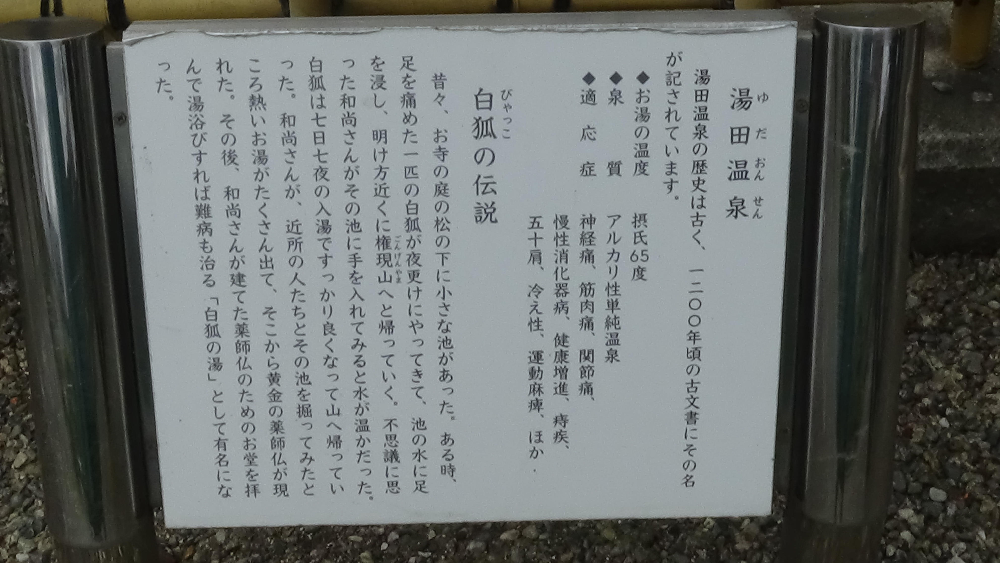
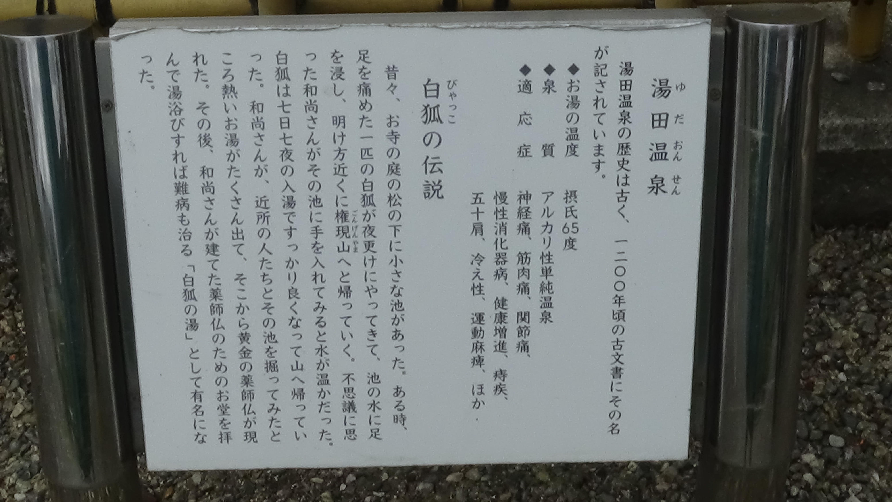

きつねめぐり

山口県山口市の湯田温泉で
"きつね"をめぐってみる
なぜ湯田温泉には狐がいるのでしょうか。それは昔、傷ついた白狐が毎晩お寺の小さな池にやってきて足をつけており、それを見た和尚さんが池を深く掘ると温泉が湧き出たという伝説から湯田温泉には白狐がいるのです
ゆう太は 湯田温泉駅にある高さ8メートルの巨大な白狐の像です。ゆう太の後ろには足湯があり、山口線を走る列車やSL山口号を眺めながら入ることができます。


アセンとコンガは井上公園の足湯にいる狐です。狐像のすぐそばには湯田温泉の白狐の伝説についての看板があり、それを見ながら足湯につかることができます
 


テキストテキストテキストテキストテキストテキストテキストテキストテキストテキストテキストテキスト